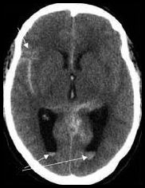
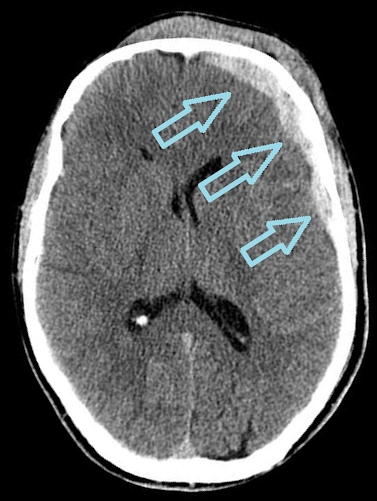

Type questions in the box to take a history.
When you start typing, you can select from common questions.
Press enter or "Ask" to ask the question.
To ask a partner or friend, press "collateral".
If you get stuck, a "hint" button will appear.
In some browsers, you can speak by clicking the microphone.
Observations while taking the history.
Click components of the mini-mental state examination to
see/hear the patient's answers.
This is what the patient sees.
Click the icon to toggle which eye is open.
Click to test the visual fields.
Black dots indicate that the patient can see where you clicked.
Green indicates unable to see.
Move mouse to test eye movements.
Click to use pen torch.
Click on mouth to open.
Bars indicate power in each muscle group.
Numbers from 0 to 5 are MRC grading scores.
This displays the patient's reflexes.
+ indicates just present.
++++ indicates pathologically brisk reflexes.
Select a sensory modality to test
- pinprick, cotton wool or vibration.
Click to test sensation in a body region.
Black dots indicate veridical perception;
Green indicates lack of sensation.
The middle cerebral artery supplies a portion of the frontal lobe and the lateral surface of the temporal and parietal lobes, including the primary motor and sensory areas of the face, throat, hand and arm, and in the dominant hemisphere, the areas for speech. The also supply part of the internal capsule and basal ganglia. The superior portion of the parietal lobe is supplied the anterior cerebral artery. The inferior portion of the temporal lobe is supplied by the posterior cerebral artery.
The anterior choroidal artery supplies structures in the telencephalon, diencephalon, and mesencephalon. Areas include the optic chiasm and optic tract, the internal capsule, the lateral geniculate body and the globus pallidus. The posterior limb of the internal capsule is also supplied by lenticulostriate arteries.
The anterior cerebral artery supplies the medial surface and the upper border of the frontal lobe and superior medial parietal lobes. It also supplies the front four–fifths of the corpus callosum. In addition, it supplies the anterior limb of the internal capsule, a portion of the caudate nucleus, and also the anterior globus pallidus. The anterior communicating artery connects the left and right anterior cerebral arteries.
This is responsible for venous drainage of the deep parts of the hemisphere and does not supply blood to a specific area.
The lenticulostriate arteries are end arteries that arise from the middle cerebral artery (MCA). They are small perforating arteries supplying blood to part of the basal ganglia and posterior limb of the internal capsule.
This is a branch of the posterior cerebral artery. It supplies the medial and lateral geniculate nucleus and also part of the thalamus.
This is one of the three main arteries supplying the cerebellum. It also supplies the posterolateral part of the medulla and the choroid plexus of the fourth ventricle.
This is one of the three main arteries to the cerebellum, supplying the anteroinferior surface. It also supplies the flocculus, middle cerebellar peduncle and in addition the inferolateral portion of the pons.
This is one of the three main arteries supplying the cerebellum. It supplies the superior half of the cerebellum and parts of the midbrain.
This artery connects the internal carotid artery (ICA) prior to the terminal bifurcation of the ICA into the anterior cerebral artery and middle cerebral artery and the posterior cerebral artery.
This supplies the occipital lobe and inferior medial temporal lobe. It also has thalamogeniculate branches supplying the thalamus, and callosal branch supplying the splenium (posterior part of corpus callosum).
This is a branch of the internal carotid artery. It supplies the orbit in addition to some structures in the nose, face and meninges.
This supplies the pons and superior and inferior aspects of the cerebellum.
Huntington's is a genetic neurodegenerative disease that affects the basal ganglia. It is characterised by mood disturbance, impulsivity, chorea and dementia.
Focal caudate hypodensity occurs with lacunar infarcts. This form of cerebrovascular disease is often related to hypertension. They rarely affect eye movements.
Hyperdensities in the ventricles on CT are often benign calcification of the choroid plexus. Blood is usually seen pooling toward the bottom of the ventricle, and is less bright than bone.

Prefrontal infarcts can present with acute confusion, dysphasia, focal weakness. They can cause ipsilateral gaze deviation, but not internuclear ophthalmoplegia.
There are focal hypodensities bilaterally in the thalamus.
Subdurals are a common cause of fluctuating confusion. They appear as a rim inside the skull, which is dense (white) in the acute phase, and low density (grey) in the chronic phase.

s
Alcohol can cause vestibular dysfunction and nystagmus but eye movements would remain conjugate.
B12 deficiency causes dorsal column sensory loss and spastic paraparesis.
Meningeal involvement can cause cranial nerve palsies, but the patient would be meningitic and febrile.
A lumbar puncture can be performed to rule this out.
Wernicke's can cause brainstem ophthalmoplegia, anterograde amnesia and confabulation.
NeuroSim
Neuroanatomy and clinical neurology simulator
Concept and Programming:
Sanjay G Manohar
University of Oxford, 2010-2021
Funding
University of Oxford IT Innovations seed grant (2015-2016)